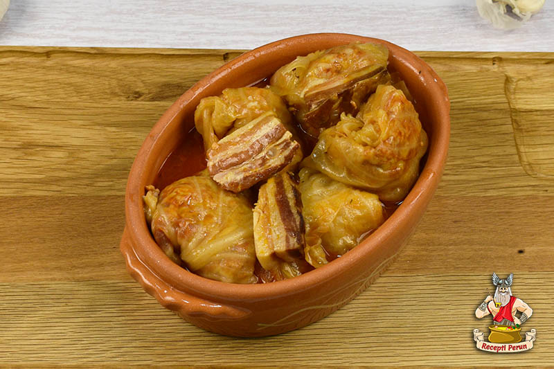

Recept za Sarmu

Recept za Sarmu
This recipe for Serbian stuffed cabbage, or sarma, is a hearty dish that many Serbs serve every day but especially for special occasions like slavas and other holidays. Recipes vary from cook to cook, but they all consist of a meat filling wrapped in cabbage and cooked over sauerkraut. This recipe includes a tomato sauce for more flavor.
Ingredients
- 1 (3-to 4-pound) head cabbage
- 1 pound ground chuck
- 1/2 pound ground pork
- 1 cup raw rice, rinsed
- 1 (1.4-ounce) package dehydrated onion soup mix
- 1 (32-ounce) jar sauerkraut, rinsed and drained
- 6 medium smoked ribs, ham hocks, or other smoked meat
- 1 (8-ounce) can tomato sauce
- 1 (10 3/4-ounce) can tomato soup
Steps to make it
- Gather the ingredients.
- Cut the core out of the cabbage and discard. In a large pot partially filled with boiling water, steam the cabbage, cut-side down. Reduce the heat to medium, cover and steam until the outer leaves are limp, about 8 to 10 minutes. Use tongs to remove the larger softened leaves. Continue to steam and remove larger leaves as they become done until you have about 22 to 23 whole large cabbage leaves. Reserve any remaining steamed cabbage.
- With a paring knife, remove the tough ribs without damaging the leaves. Discard the cabbage ribs or reserve for another use.
- In a large bowl, mix together the ground chuck, ground pork, rice, and onion soup mix.
- Add a small amount of water to make the mixture easier to handle.
- Set 3 or 4 of the leaves aside. Heap about 1/4 cup of filling onto each of the remaining cabbage leaves.
- Fold the bottom of the cabbage leaf up over the meat.
- Repeat until all the meat filling is used.